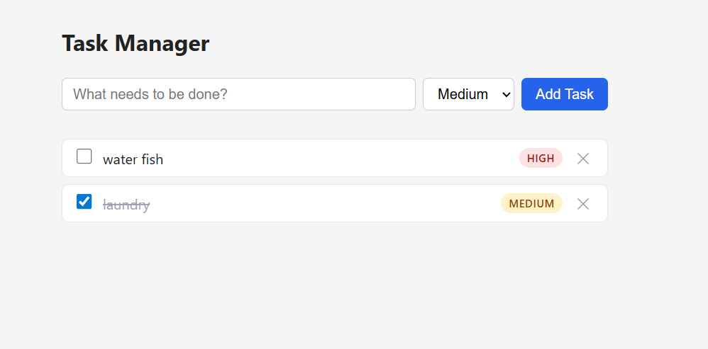

Build a Simple Task Manager - Learn AI-DLC by building something real you can use
Project: Personal Task Manager | Stack: Python / Flask / SQLite / HTML
Learn the three-phase AI-DLC methodology: Inception (Human-led, AI-expanded), Construction (AI-led, Human-validated), and Operations (AI-assisted, Human-governed).
venv, and pipWe have just been hired by our new clients to create a hit new app. However, they are very vague as to what the app is and what they want. Here is what they have told us so far:
“We want a simple task manager such that a user can add tasks to do for the day. Users should be able to view them all at once, and be able to give them labels of importance based on how important that specific task is. There should be a feature to delete tasks from the current list as well. These are all the features that we need at this time.”
You kick off the entire workflow with a single prompt describing what you want to build. AI-DLC Workflow takes it from there — it detects your workspace, sets up tracking, and starts guiding you through the phases.
Open a new chat and type:
Using AI-DLC, build a local-first personal task manager using Python Flask, SQLite, and a minimal HTML frontend. Help users add tasks and view their task list. Keep it simple with just these two core features.
AI-DLC Workflow activates and runs Workspace Detection automatically. It will display a welcome message explaining the three-phase lifecycle (Inception → Construction → Operations), scan your workspace, set up the aidlc-docs/ directory with state and audit tracking, and proceed to the next stage.
Read the welcome message — it explains the workflow you'll follow for the rest of the workshop.
The AI analyzes your request and asks clarifying questions about anything unclear. The number and content of questions vary based on your initial prompt. You'll also see a question about enabling security extension rules.
When the AI presents the questions file: Open it, fill in your [Answer]: tags using the multiple-choice letters. For the security extension question, answer "No" since this is a prototype. Then tell the AI:
I have answered the clarification questions. Please re-read the file and proceed.
The AI may ask follow-up questions if it finds ambiguities in your answers. Once resolved, it generates a requirements document and presents an approval gate.
The AI creates user stories that become the contract for what gets built. It runs in two parts: first it plans how to structure the stories (and asks you about organization style and detail level), then it generates the actual stories with personas and acceptance criteria.
Part 1 — Planning: The AI creates a story generation plan with questions. Open the plan file, fill in your answers, then tell the AI you're done. The AI summarizes your choices and asks for plan approval.
Part 2 — Generation: The AI executes the plan step by step, marking checkboxes as it goes. It generates user personas and user stories. The AI presents the completed stories for your review.
Go to aidlc-docs/aidlc-state.md, find the first unchecked item, then go to the corresponding plan file and resume from that point. For shorter workshops, you can skip this and continue in the same chat.The AI looks at everything gathered so far and decides which Construction stages to run. It generates an execution plan with a visual diagram showing what's completed, what will execute, and what's being skipped.
For this simple project, expect most Construction design stages (Functional Design, NFR, etc.) to be skipped, with Code Generation and Build and Test marked for execution.
If you want to add local packaging for the Operations step, tell the AI:
Add Local Packaging to the plan. We need Dockerfile, docker-compose.yml, .env.example, and a local deployment guide for the Operations step.
Review the execution plan and respond:
This is the main build activity. The AI creates a plan for what code to generate, gets your approval, then executes it step by step — checking off each item as it goes. Code goes in the workspace root, documentation goes in aidlc-docs/.
Part 1 — Planning: The AI creates a code generation plan with numbered, checkboxed steps covering what files to create, where they go, and how they map back to the user stories.
Review that the plan includes Flask routes, SQLite persistence, a minimal HTML template, validation for missing task titles, and local tests.
Review the plan — check that the steps cover both user stories and that code goes in the right places.
Part 2 — Generation: The AI executes each step, marking checkboxes as it completes them.
When complete, review the generated code and respond:
The AI packages the local-first Flask application for repeatable Operations use. It generates Docker Compose artifacts, a local deployment guide, and validation notes.
Dockerfile for the Flask applicationdocker-compose.yml exposing the app at http://localhost:5000.env.example for local configuration./data/tasks.dbGET /health for local health checksDEPLOYMENT/local-deployment-guide.md and validation notesAI-DLC Workflow generates build and test instructions covering how to build, run, and test the application.
Test your application using the instructions provided:
cd taskManager python3 -m venv .venv source .venv/bin/activate python -m pip install -r requirements.txt python app.py
On Windows PowerShell:
cd taskManager py -3 -m venv .venv .\.venv\Scripts\Activate.ps1 python -m pip install -r requirements.txt python app.py
Open the HTML frontend in your browser:
http://localhost:5000
In a separate terminal:
# Add a task
curl -X POST http://localhost:5000/tasks -H "Content-Type: application/json" \
-d '{"title": "Learn AI-DLC", "description": "Complete the tutorial"}'
# Get all tasks
curl http://localhost:5000/tasks
# Check application health
curl http://localhost:5000/health
AI-DLC Workflow's Operations phase is a placeholder for future expansion. This is a group discussion about what comes after building.
Discuss as a group:
Now that we've built our task manager, discuss how AI would help with: 1. Packaging our task manager with Docker Compose for repeatable local runs 2. Monitoring local logs, API health, and application performance 3. Backing up and restoring the SQLite database 4. Migrating from SQLite to PostgreSQL or hosted infrastructure later Please explain how this would work for our specific task manager application.
[Answer]: tags, then tell the AI to re-read.aidlc-state.md. For short workshops, you can often skip this.aidlc-state.md to see where you are at any point.We will work on building an application today. For every front end and backend component we will create a project folder. All documents will reside in the aidlc-docs folder. Throughout our session I'll ask you to plan your work ahead and create an md file for the plan. You may work only after I approve said plan. These plans will always be stored in aidlc-docs/plans folder. You will create many types of documents in the md format. Requirement, features changes documents will reside in aidlc-docs/requirements folder. User stories must be stored in the aidlc-docs/story-artifacts folder. Architecture and Design documents must be stored in the aidlc-docs/design-artifacts folder. All prompts in order must be stored in the aidlc-docs/prompts.md file. Confirm your understanding of this prompt. Create the necessary folders and files for storage, if they do not exist already.
Intent: Build a simple personal task manager to help users add tasks and view their task list. Do not propose solutions yet. Acknowledge the intent and confirm understanding.
Your Role: You are an expert product manager and are tasked with creating well defined user stories that becomes the contract for developing the system as mentioned in the Task section below. Plan for the work ahead and write your steps in an md file (user_stories_plan.md) with checkboxes for each step in the plan. If any step needs my clarification, add a note in the step to get my confirmation. Do not make critical decisions on your own. Upon completing the plan, ask for my review and approval. After my approval, you can go ahead to execute the same plan one step at a time. Once you finish each step, mark the checkboxes as done in the plan.
Your Task: Build user stories for the high-level requirement as described here: "✏️ TODO: fill in your application description below" Save the final user stories in aidlc-docs/story-artifacts/mvp_user_stories.md file.Yes, I like your plan as in the user_stories_plan.md. Now exactly follow the same plan. Interact with me as specified in the plan. Once you finish each step, mark the checkboxes in the plan.aidlc-docs/story-artifacts/mvp_user_stories.md and review what it produced.
Your Role: You are an experienced software architect. Before you start the task as mentioned below, please do the planning and write your steps in the aidlc-docs/plans/units_plan.md file with checkboxes against each step in the plan. If any step needs my clarification, please add it to the step to interact with me and get my confirmation. Do not make critical decisions on your own. Once you produce the plan, ask for my review and approval. After my approval, you can go ahead to execute the same plan one step at a time. Once you finish each step, mark the checkboxes as done in the plan. Your Task: Refer to the user stories in aidlc-docs/story-artifacts/mvp_user_stories.md file. Group the user stories into a single cohesive unit called "Task Management Unit" that contains all the user stories. Save this as aidlc-docs/design-artifacts/task_management_unit.md.
aidlc-docs/design-artifacts/task_management_unit.md and compare it against aidlc-docs/story-artifacts/mvp_user_stories.md.
mvp_user_stories.md, then count them in the unit. Find any story that got dropped or merged during grouping.I approve. Proceed.Your Role: You are an experienced software engineer. Before you start the task as mentioned below, please do the planning and write your steps in an aidlc-docs/design-artifacts/component_model_plan.md file with checkboxes against each step in the plan. If any step needs my clarification, please add it to the step to interact with me and get my confirmation. Do not make critical decisions on your own. Once you produce the plan, ask for my review and approval. After my approval, you can go ahead to execute the same plan one step at a time. Once you finish each step, mark the checkboxes as done in the plan. Your Task: Refer to the user stories in the aidlc-docs/design-artifacts/task_management_unit.md file. Design the component model to implement all the user stories. This model shall contain all the components, the attributes, the behaviors and how the components interact to implement the user stories. Do not generate any codes yet. Write the component model into aidlc-docs/design-artifacts/task_component_model.md file.
aidlc-docs/design-artifacts/task_component_model.md and review the component model the AI designed — no code has been written yet, only structure.
I approve the plan. Proceed. After completing each step, mark the checkbox in your plan file.Your Role: You are an experienced software engineer. Before you start the task as mentioned below, please do the planning and write your steps in an aidlc-docs/plans/code_generation_plan.md file with checkboxes against each step in the plan. If any step needs my clarification, please add it to the step to interact with me and get my confirmation. Do not make critical decisions on your own. Once you produce the plan, ask for my review and approval. After my approval, you can go ahead to execute the same plan one step at a time. Once you finish each step, mark the checkboxes as done in the plan.
Task: Refer to component design in the aidlc-docs/design-artifacts/task_component_model.md file. Generate a simple local-first Python Flask implementation for the Task Management Component with these features:
- Add new tasks
- View all tasks
- Persist tasks in SQLite by default
- Provide a minimal HTML frontend at /
- Keep JSON API endpoints available for curl testing
- Validate that task title is required
- ✏️ TODO: describe your additional feature here
Generate files under taskManager:
- app.py
- task.py
- task_service.py
- task_repository.py
- templates/index.html
- static/styles.css if useful
- requirements.txt
- tests for service, repository, and API behaviorcurl) asks the app at that address, the app does the matching work and sends a response back. For example, one route shows the task list when you open the page, and another adds a new task when the form is submitted. You don't need to know the technical wording. Just describe the action you want in plain words and let the AI choose the right route.Your Role: You are an experienced software engineer. Before you start the task as mentioned below, please do the planning and write your steps in an md file with checkboxes against each step in the plan. If any step needs my clarification, please add it to the step to interact with me and get my confirmation. Do not make critical decisions on your own. Once you produce the plan, ask for my review and approval. After my approval, you can go ahead to execute the same plan one step at a time. Once you finish each step, mark the checkboxes as done in the plan.
Task: Refer to the task_service.py under the taskManager/ folder. Create the Flask routes the app needs so that a user can:
- Open a page that shows the task list and a form to add a task
- Add a new task (from both the page form and as a JSON API for curl testing)
- View all tasks as JSON for curl testing
- Check that the app is healthy
- ✏️ TODO: describe in plain words anything else you want to be able to do (optional)
For each capability, decide the appropriate route yourself (method and path) and implement it. Routes must use the SQLite-backed repository through the service layer. Test the browser flow and curl API flow.Your Role: You are an experienced platform engineer. Before you start the task as mentioned below, please do the planning and write your steps in a deployment_plan.md file with checkboxes against each step in the plan. If any step needs my clarification, please add it to the step to interact with me and get my confirmation. Do not make critical decisions on your own. Once you produce the plan, ask for my review and approval. After my approval, you can go ahead to execute the same plan one step at a time. Once you finish each step, mark the checkboxes as done in the plan. Task: Package this local-first Flask + SQLite task manager for the Operations step using Docker. Do not require AWS services, AWS credentials, CloudFormation, or any cloud account. Create: - Dockerfile - docker-compose.yml - .env.example - DEPLOYMENT/local-deployment-guide.md - DEPLOYMENT/validation-report.md Requirements: - App runs on http://localhost:5000 - SQLite database persists under ./data/tasks.db - Docker Compose bind-mounts or volumes ./data - Include a health check for /health - Include commands for docker compose up --build, docker compose ps, docker compose logs, and docker compose down - Validate browser flow and curl API flow - Review the validation report and fix all identified issues, then update the validation report
Your Role: You are an experienced platform engineer. Before you start the task as mentioned below, please do the planning and write your steps in a deployment_plan.md file with checkboxes against each step in the plan. If any step needs my clarification, please add it to the step to interact with me and get my confirmation. Do not make critical decisions on your own. Once you produce the plan, ask for my review and approval. After my approval, you can go ahead to execute the same plan one step at a time. Once you finish each step, mark the checkboxes as done in the plan. Task: Package this local-first Flask + SQLite task manager for the Operations step. I do not have Docker, so do not use Docker, docker-compose, or containers at all. Do not require AWS services, AWS credentials, CloudFormation, or any cloud account. Create: - .env.example - DEPLOYMENT/local-deployment-guide.md - DEPLOYMENT/validation-report.md Requirements: - App runs on http://localhost:5000, started directly with a Python virtual environment (python -m venv, pip install -r requirements.txt, python app.py) - SQLite database persists under ./data/tasks.db - Include a health check for /health - The deployment guide must include the exact commands to set up the virtual environment, install dependencies, run the app, and stop it, for both macOS/Linux and Windows PowerShell - Validate browser flow and curl API flow - Review the validation report and fix all identified issues, then update the validation report
Now that we've built our task manager, let's discuss the Operations Phase. Based on what we've created, how would AI help with: 1. Packaging our task manager with Docker Compose for repeatable local runs 2. Monitoring local logs, API health, and application performance 3. Backing up and restoring the SQLite database 4. Migrating from SQLite to PostgreSQL or hosted infrastructure later Please explain how this would work for our specific task manager application.
Rather than copying fixed commands, ask the AI to generate a test plan for the app it actually built — it knows your real routes, port, and any feature you added. Copy this prompt:
Generate a short manual test plan for the task manager app we just built. Base it on the actual routes, port, and files in the project, not on assumptions. Include two parts: 1. Browser/UI walkthrough: step-by-step actions I can take in the browser to confirm each feature works (for example, adding a task, viewing the list, and any extra feature I added). Tell me which page to open. 2. curl commands: the exact curl commands to exercise each API route, with example data, and what response I should expect from each one. Also include the commands to start the app locally first. Keep it copy-paste ready.
Earlier, one of our engineers followed the exact same steps you just did and created this prototype. In what ways are the two apps similar and different? Where could the differences have crept in?
